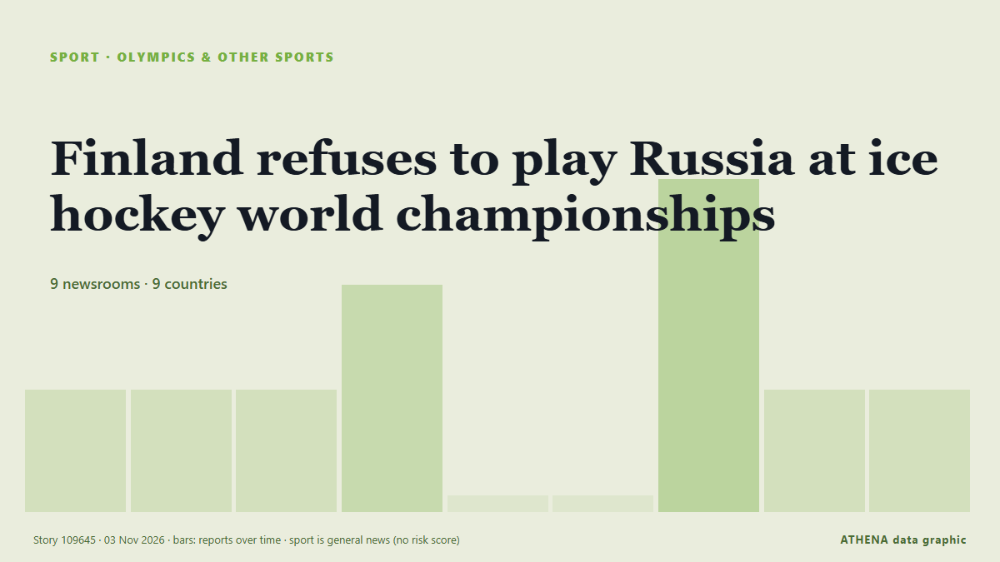

Juegos Olímpicos y más
PatrocinadoPresentado por  Cybernetics and Artificial Intelligence Lab Welcome to the Cybernetics and Artificial Intelligence Laboratory, established at the Department of Business Administration of the National and Kapodistrian University of Athens. The lab is headed by Professor Dimitrios Thomakos. The lab aims to do research that can be published in top venues. Our research uses tools and methods of Artificial Intelligence, and lies in the following areas: - Forecasting - Decision making - Cyber security - Finance We are always looking forward to collaborating with exceptional students!
Cybernetics and Artificial Intelligence Lab Welcome to the Cybernetics and Artificial Intelligence Laboratory, established at the Department of Business Administration of the National and Kapodistrian University of Athens. The lab is headed by Professor Dimitrios Thomakos. The lab aims to do research that can be published in top venues. Our research uses tools and methods of Artificial Intelligence, and lies in the following areas: - Forecasting - Decision making - Cyber security - Finance We are always looking forward to collaborating with exceptional students!
| 21 oct | 1 |
|---|---|
| 22 oct | 0 |
| 23 oct | 0 |
| 24 oct | 0 |
| 25 oct | 0 |
| 26 oct | 1 |
| 27 oct | 0 |
| 28 oct | 1 |
| 29 oct | 1 |
| 30 oct | 3 |
| 31 oct | 4 |
| 1 nov | 6 |
| 2 nov | 6 |
| 3 nov | 1 |
Los titulares se muestran en inglés, tal como se publicaron.

Finland refuses to play Russia at ice hockey world championships
The tournament is scheduled to be played in Germany in May. de Yle News (alternative feed)
Gabby Williams leads Valkyries to WNBA championship in second season, beating Dream 68-63 in Game 7
SAN FRANCISCO: Gabby Williams scored her team’s final 11 points of the third quarter and dazzled through the fourth on the way to 30 points, and the Golden State Valkyries captured a championship in… de Arab News
Senegal prepares to open 2026 Youth Olympic Games in Dakar
Senegal’s three-day general strike entered its second day on Thursday, with unions pressing the government to honour agreements on pay, pensions and working conditions amid a deepening economic… de RFI English
Canelo reclaims WBC title as Mexico falls 5-4 to The World in Riyadh boxing showdown
RIYADH: Mexican boxing star Saul “Canelo” Alvarez reclaimed the World Boxing Council Super Middleweight title after defeating France’s Christian Mbilli by unanimous decision in the final bout of… de Arab News
Almgren wins debut marathon in New York, Chepkirui wins women’s race
Sweden’s Andreas Almgren won the New York City Marathon, clocking 2hr 6min 1sec in a spectacular debut at the distance on Sunday. de The Namibian
Ukraine calls allowing return of Russian ice hockey teams to world championships ‘unacceptable’
Foreign minister says return of Russian teams while Ukraine war continues would give Moscow international legitimacy it seeks. de Anadolu Agency (English)
Finland to ban Russian athletes from entering country over return to 2027 World Championships
Foreign Minister Elina Valtonen has stated Finland will seek to restrict Russian athletes' access to the Schengen area if the war against Ukraine continues. de Ukrainska Pravda (English)
Afghanistan overtake Sri Lanka in ODI rankings as Pakistan face fine
Afghanistan have climbed to sixth place in the latest ICC Men’s ODI Team Rankings, achieving their highest-ever position and moving above Sri Lanka. de Daily Mirror
‘Where’s the umbrella?’ King weathers torrential downpour in Antigua
Charles threw up his arms and asked for an umbrella when the heavens opened just as he arrived at the Sir Vivian Richards cricket stadium. de Evening Standard (London)
Kyrgyzstan finishes World Wrestling Championships without gold medals
Kyrgyzstan’s national wrestling team won two silver and three bronze medals at the World Wrestling Championships held in Astana from October 24 to November 1.… de 24.kg (English)
Namibia joins historic Dakar Youth Olympic Games
The Dakar 2026 Youth Olympic Games officially opened on Saturday with a vibrant ceremony at Stade Abdoulaye Wade in Diamniadio, Senegal, marking a historic milestone as Dakar becomes the first… de New Era (Namibia)
09:56 Summer Youth Olympic Games flame lit in Senegal Sport
The country is hosting nearly 2,700 young competitors aged 14 to 17 from around the world. de Channels TV
Yamashita comes out on top at Maybank Championship
Highlights of round four of the LPGA Maybank Championship in Kuala Lumpur. de Sky Sports
Tim Seifert blasts 93 as New Zealand win fifth India T20
Hosts win final T20I as India clinch series 3-2. de Express Tribune
Garcia bids for Ryder Cup return as he confirms LIV exit
European players such as Sergio Garcia have also been told that signing with the new-look LIV would make them ineligible for European Tour membership. de Free Malaysia Today
West Indies crush Bangladesh by eight wickets in first Test
MIRPUR: Brandon King struck a career-best 81 not out as West Indies cruised to an eight-wicket win over Bangladesh in the first Test on Saturday to take a 1-0 lead in the two-match series. de Business Recorder
Zaman's century foils Sri Lanka as Pakistan win tri-series
LAHORE: Opener Fakhar Zaman returned to form with a brilliant century to help Pakistan beat Sri Lanka by three wickets in the tri-series final in Lahore on Saturday. de Business Recorder
Dakar 2026 Youth Olympics opens in historic first for Africa
A Namibian team of 12 athletes will represent the nation at the first ever Youth Olympic Games in Africa, which kick off in Dakar, Senegal, tomorrow. de The Namibian
Maya Jama, Holly Willoughby and Stacey Solomon among stars in Halloween spirit
Celebrities were flaunting their costumes on social media on Saturday. de The Irish News (Belfast)